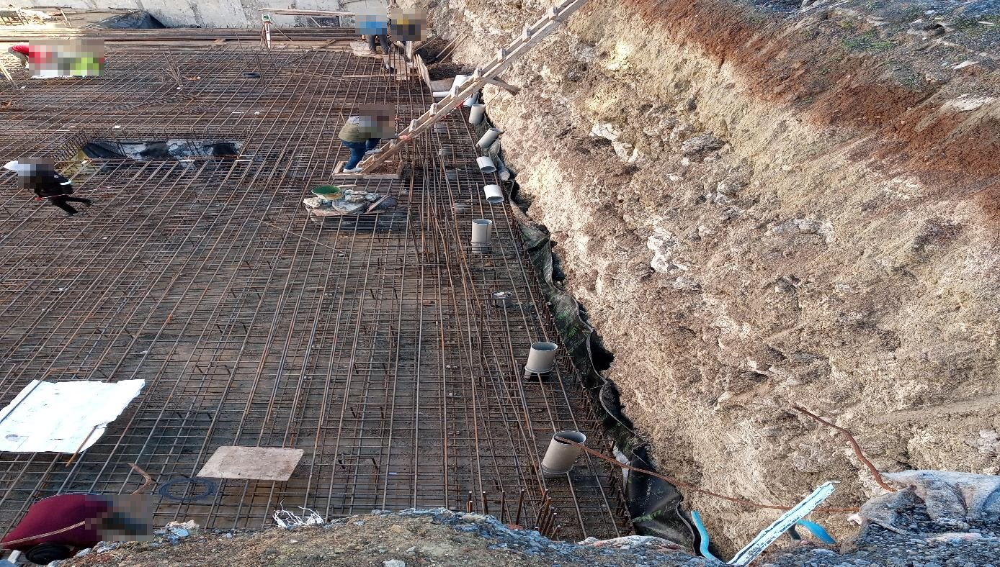
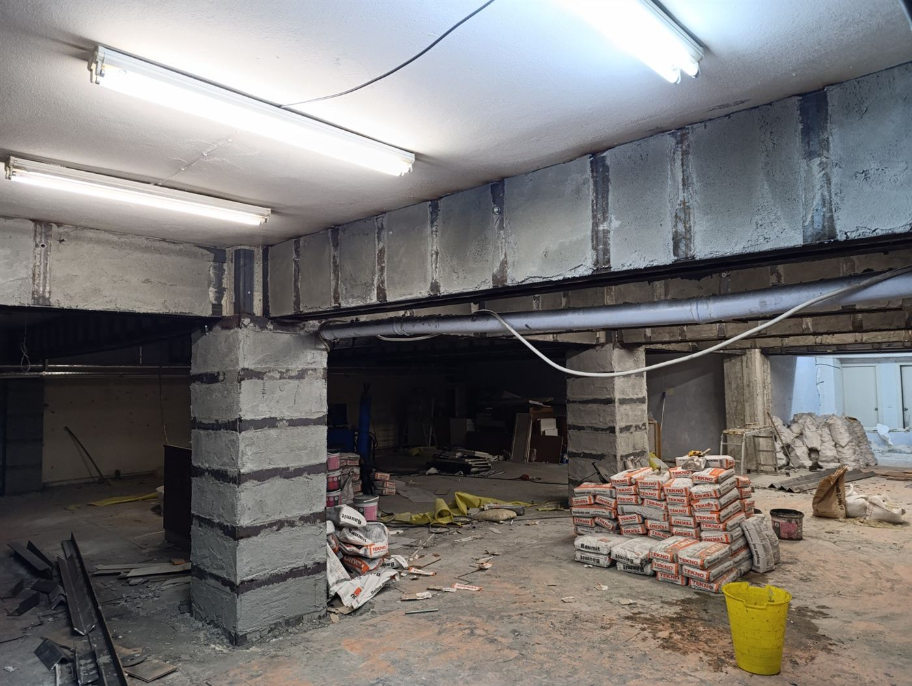
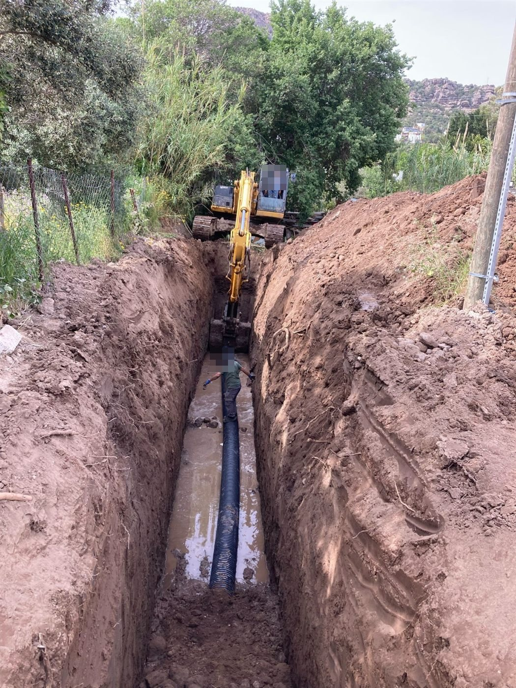
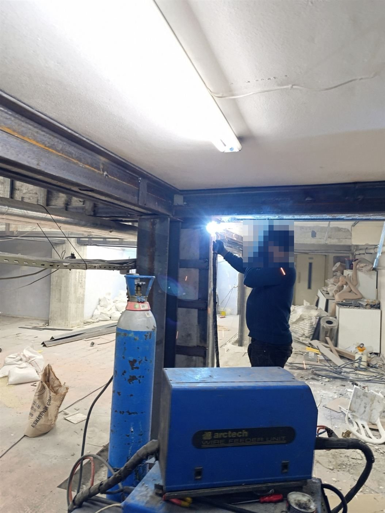
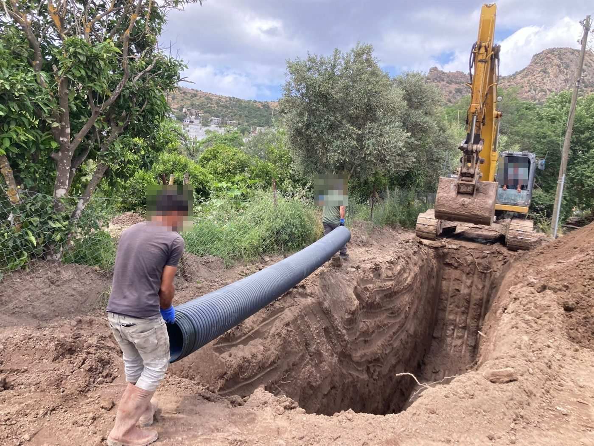

Zemin & Yapı /
yıllık tecrübe.
Sağlam zemin, güvenli yapı.
Temel ve bodrumlara sızan suların kalıcı ıslahından betonarme güçlendirmeye kadar, genelinde yerinde tespit ve uygulama.

tecrübe
Hakkımızda
Her sahada aynı mühendislik disiplini
yılı aşkın süredir genelinde konutlardan fabrikalara, belediye tesislerinden tarihi yapılara kadar pek çok binada zemin suyu ve yapı güçlendirme çalışmaları yürütüyoruz.
Önce sorunun kaynağını tespit ediyor, sonra yapıya ve zemine uygun yöntemi seçiyoruz. Yaptığımız işi raporluyor, sonucunu yapı sahibiyle birlikte takip ediyoruz.
Uzmanlık alanlarımız
Zeminden taşıyıcıya kalıcı çözümler
Sorunun belirtisini değil kaynağını çözeriz. Her iş, yerinde inceleme ile başlar.
Çalışma modelimiz
Keşiften teslime
- 01Keşif ve tespit
Yapı yerinde incelenir, suyun ve hasarın kaynağı belirlenir.
- 02Raporlama
Uygulanacak yöntem, kapsam ve süre açıkça yazılı olarak sunulur.
- 03Uygulama
İşler planlı ve kontrollü şekilde, yapı kullanımı gözetilerek yürütülür.
- 04Teslim ve takip
Sonuç birlikte kontrol edilir, sonraki dönemde takip edilir.
Seçilmiş projeler
Standardımızı belirleyen işler
Sahadan
Uygulamalarımızdan kareler




Referanslarımız
Birlikte çalıştığımız kurumlar
yıl boyunca kamu kurumlarından okullara, fabrikalardan tarihi yapılara kadar pek çok kurumun güvenini kazandık.
Hizmet bulucu
Binanızda hangisini görüyorsunuz?
Bir belirti seçin, hangi hizmetimizle ilgili olabileceğini gösterelim. Kesin tespit her zaman yerinde inceleme ile yapılır.
Listeden bir belirti seçtiğinizde ilgili hizmet burada görünür.